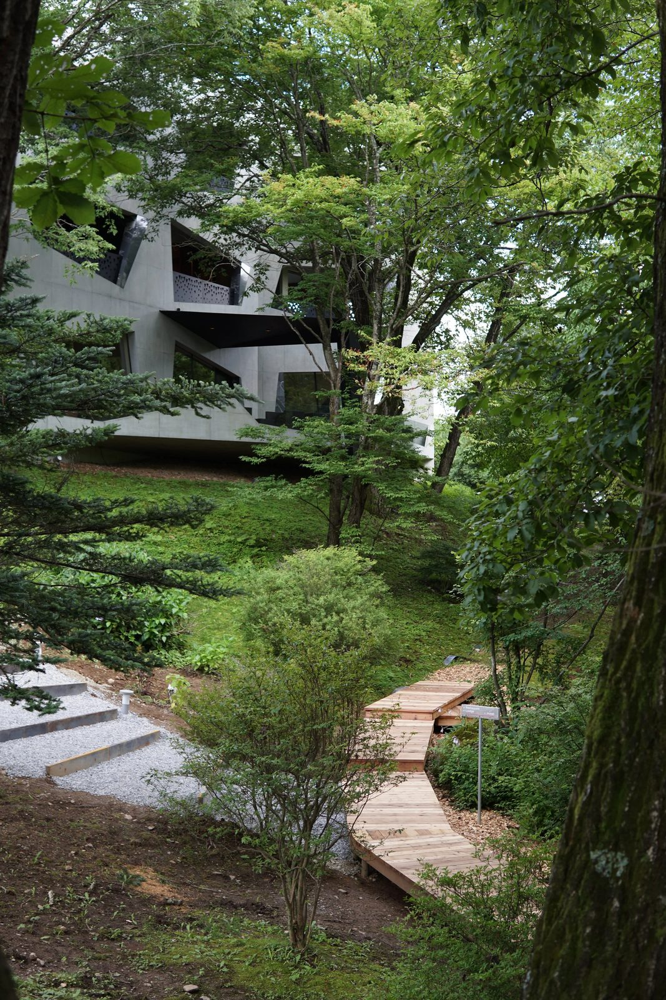
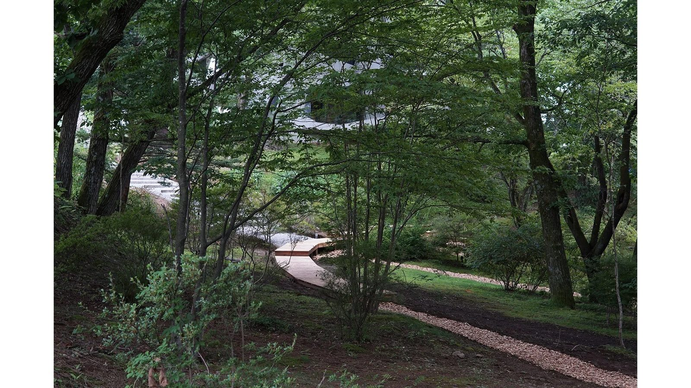
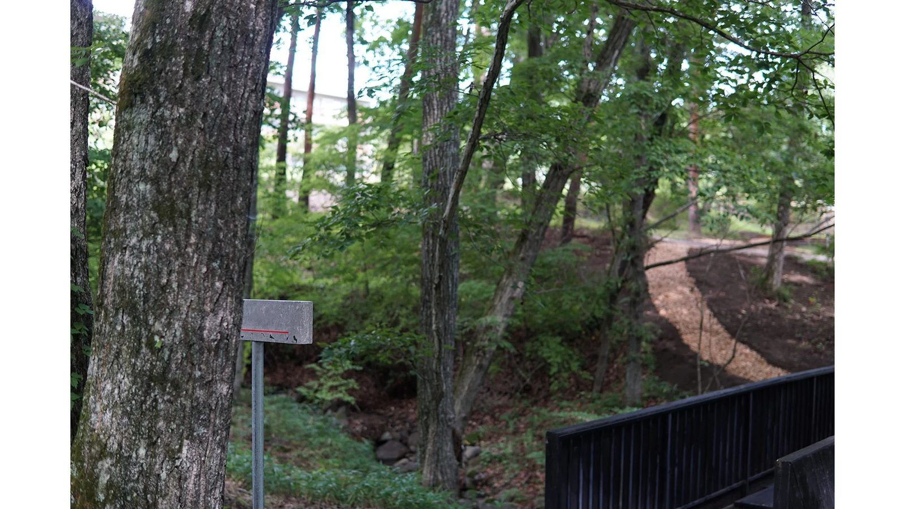
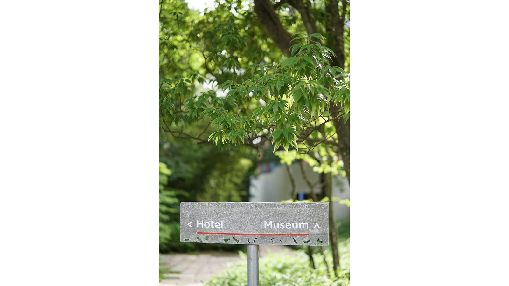
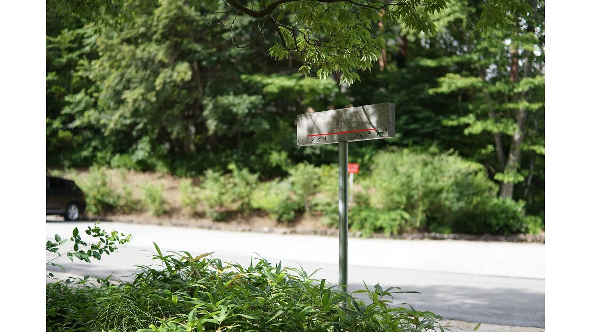
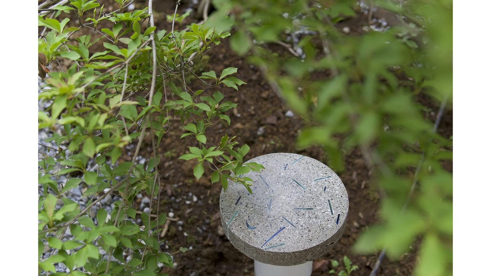
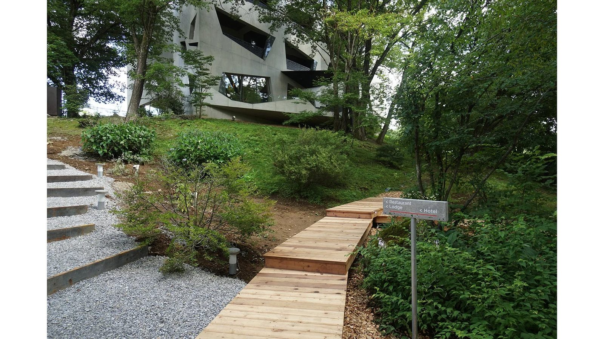
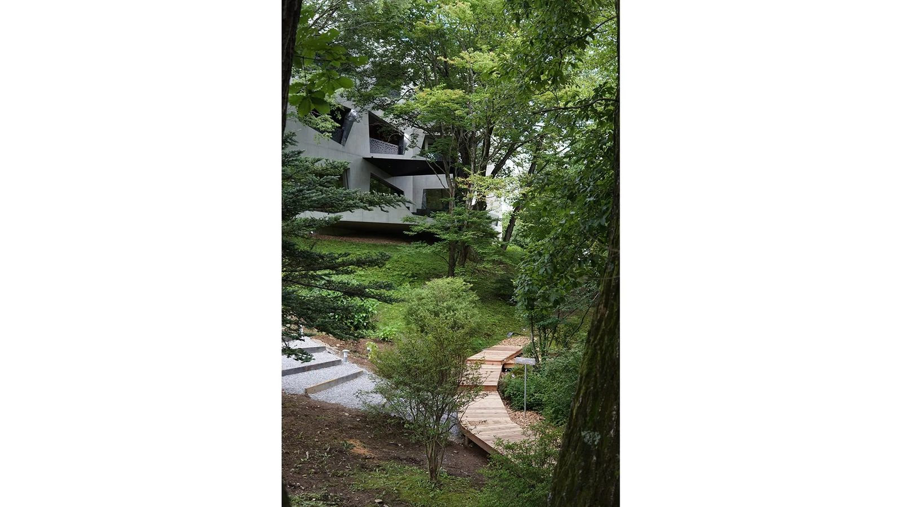

NKHC Landscape Design 2022~
NKHC Landscape Design 2022〜
山梨県にある 中村キース・ヘリング美術館 と ホテルキーフォレスト北杜 は、「小淵沢アートアンドウエルネス」というリゾート内の施設である。アートを軸に様々なアクティビティーをとおして人々がくつろげる場所となっており、今回の計画地はその2つの施設に挟まれている森であった。クライアントはこの森が、施設の利用者以外にも入りやすい場所として地域に貢献することを望んでいた。
Green foyer / 天然ホワイエ
葉が茂る季節の森は、樹々の下に天然の内部空間を作り出していた。それは建築の内包性を持ち合わせていたことから、ここを天然のホワイエとできないかと考えた。美術館とホテルやその他施設をつなぐ前室として森を機能させることで、森に人を呼び込み、施設間の移動をこの場所ならではの体験としたり、帰り際の余韻を楽しむ空間となることを目指した。
看板と照明
バラバラなデザインで配置された既存看板を更新し、各施設を同じ世界観で楽しめるようにしたいという要望から、新たな看板のデザインを行なった。看板は施設の場所を示すのみではなく、森へと人を惹きつけるためのサインとなるように、調和と違和感を共存するものとした。それは都市的とも自然的とも読み取れる素材（モルタルテラゾー）の中に、周囲の建物のデザインから引用したプリミティブなガラスの断片と、文字の下に光るまっすぐで人工的なアクリルのハイライトを配置したデザインとした。また主要動線となる階段の脇に設ける照明シェードも看板と同じマテリアルで製作し、人の目を森へと誘うきっかけとした。
稼働するサークル
森を「天然ホワイエ」たらしめているのは、各施設を繋ぐように設けた円形のアプローチ（以下、サークル）である。サークルは森の自然を人が使うことのできる空間であると示す記号となり、四季折々に変化する森の景色へ照明や看板と共に人々を誘い込む。
小淵沢の森の計画は3年間にわたる予定である。サークルが今後の計画の起点となり、各々のアクティビティーや新しい施設を隔てつつ結ぶことで、ホワイエとしての森の可能性をさらに広げて行く。
設計：a.d.p + Yard Works
施工：Yard Works
看板・照明 : a.d.p
植栽：Yard Works
所在地：山梨県
設計：2021年11月-2022年6月
工事：2022年7月
竣工：2022年7月







